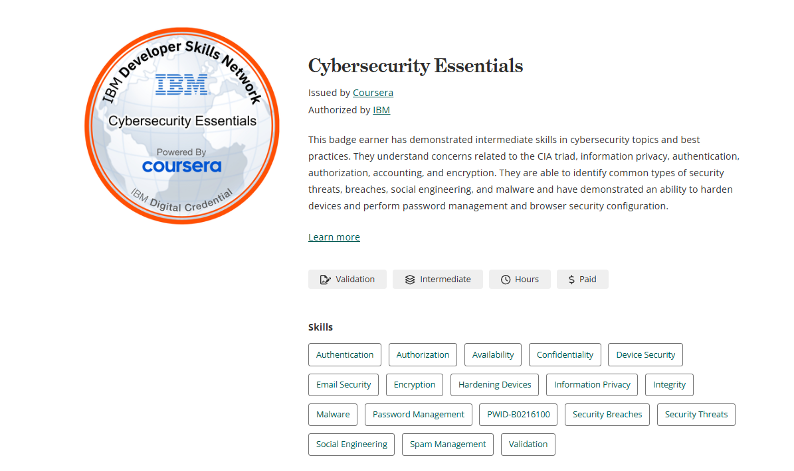

Projects and Experience
I have developed various kinds of web pages as a part of my first year
as a Cybersecurity student as shown below:


Through these projects I have gained a basic understanding of how to
develop web pages and the syntax behind them, HTML5, CSS, and basic
inline JavaScript. Thank you to Mr. Mohammed Israr for imparting this
knowledge to me.
I have also acheived a certificate and badge in 'Cybersecurity
Fundamentals' from IBM. This is just first many I'm planning to acquire
and it shows my passion for acquiring new knowledge and skills.
